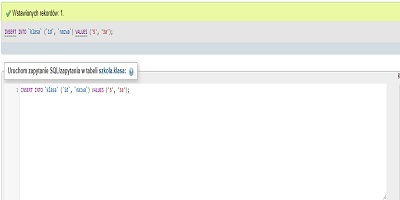
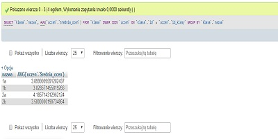
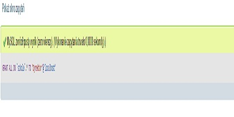

| Treść zapytania | Zrzut ekranu |
| INSERT INTO klasa (id, nazwa) VALUES ('5', '3a'); |  |
| SELECT klasa.nazwa, AVG(uczen.Srednia_ocen) FROM klasa INNER JOIN uczen ON klasa.id = uczen.id_klasy GROUP BY klasa.nazwa |  |
| CREATE USER 'Dyrektor'@'localhost' IDENTIFIED BY 'dyr_123' | |
| GRANT ALL ON szkola.* TO 'Dyrektor'@'localhost' |  |
Do pobrania
Wyznaczanie najniższej średniej:
- Polak
- Nowak
- Rysik